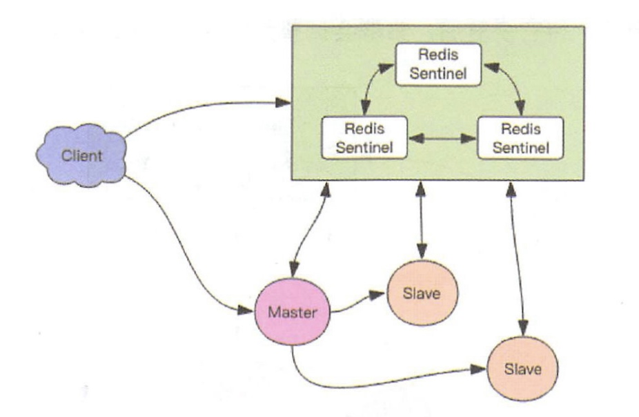
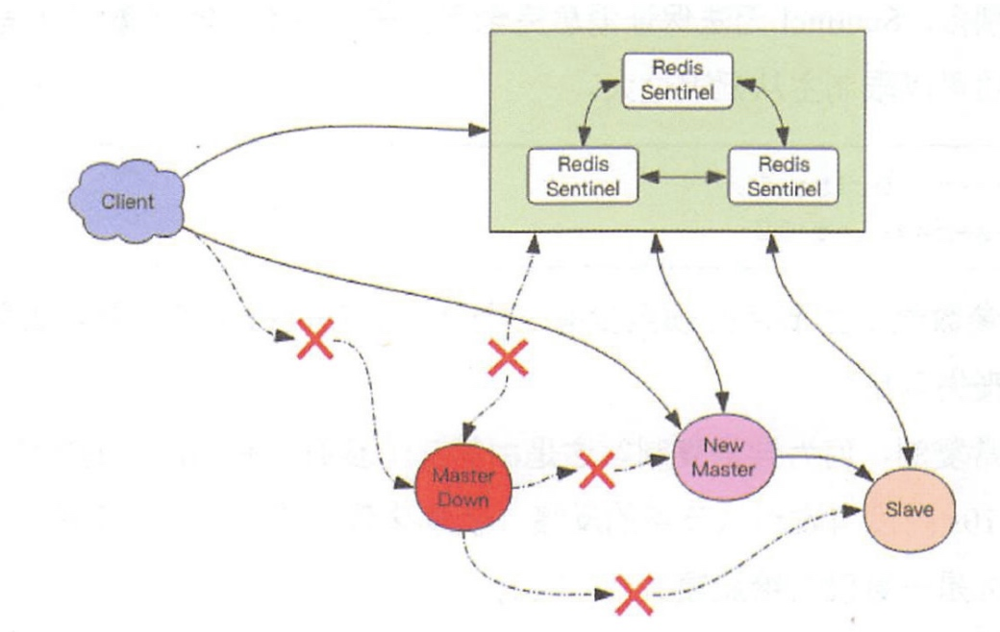
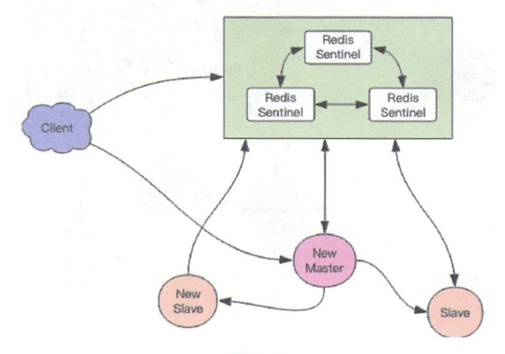

我们必须有一个高可用方案来抵抗节点故障，当故障发生时可以自动进行从主切换，程序可以不用重启，Redis 官方提供了这样一种方案 —— Redis Sentinel(哨兵)。

我们可以将 Redis Sentinel 集群看成是一个 ZooKeeper 集群，它是集群高可用的心脏，它一般是由 3～5 个节点组成，这样挂了个别节点集群还可以正常运转。
它负责持续监控主从节点的健康，当主节点挂掉时，自动选择一个最优的从节点切换为主节点。客户端来连接集群时，会首先连接 sentinel，通过 sentinel 来查询主节点的地址，然后再去连接主节点进行数据交互。当主节点发生故障时，客户端会重新向 sentinel 要地址，sentinel 会将最新的主节点地址告诉客户端。如此应用程序将无需重启即可自动完成节点切换。比如上图的主节点挂掉后，集群将可能自动调整为下图所示结构。

从这张图中我们能看到主节点挂掉了，原先的主从复制也断开了，客户端和损坏的主节点也断开了。从节点被提升为新的主节点，其它从节点开始和新的主节点建立复制关系。客户端通过新的主节点继续进行交互。Sentinel 会持续监控已经挂掉了主节点，待它恢复后，集群会调整为下面这张图。

此时原先挂掉的主节点现在变成了从节点，从新的主节点那里建立复制关系。
消息丢失
Redis 主从采用异步复制，意味着当主节点挂掉时，从节点可能没有收到全部的同步消息，这部分未同步的消息就丢失了。如果主从延迟特别大，那么丢失的数据就可能会特别多。Sentinel 无法保证消息完全不丢失，但是也尽可能保证消息少丢失。它有两个选项可以限制主从延迟过大。
min-slaves-to-write 1
min-slaves-max-lag 10
第一个参数表示主节点必须至少有一个从节点在进行正常复制，否则就停止对外写服务，丧失可用性。
何为正常复制，何为异常复制？这个就是由第二个参数控制的，它的单位是秒，表示如果 10s 没有收到从节点的反馈，就意味着从节点同步不正常，要么网络断开了，要么一直没有给反馈。
Sentinel 基本使用
接下来我们看看客户端如何使用 sentinel，标准的流程应该是客户端可以通过 sentinel 发现主从节点的地址，然后在通过这些地址建立相应的连接来进行数据存取操作。我们来看看 Python 客户端是如何做的。
>>> from redis.sentinel import Sentinel
>>> sentinel = Sentinel([('localhost', 26379)], socket_timeout=0.1)
>>> sentinel.discover_master('mymaster')
('127.0.0.1', 6379)
>>> sentinel.discover_slaves('mymaster')
[('127.0.0.1', 6380)]
sentinel 的默认端口是 26379，不同于 Redis 的默认端口 6379，通过 sentinel 对象的 discover_xxx 方法可以发现主从地址，主地址只有一个，从地址可以有多个。
>>> master = sentinel.master_for('mymaster', socket_timeout=0.1)
>>> slave = sentinel.slave_for('mymaster', socket_timeout=0.1)
>>> master.set('foo', 'bar')
>>> slave.get('foo')
'bar'
本文由 Sajor
创作，采用 知识共享署名4.0 国际许可协议进行许可
本站文章除注明转载/出处外，均为本站原创或翻译，转载前请务必署名
最后编辑时间为: 2022-03-19T11:57:19+08:00